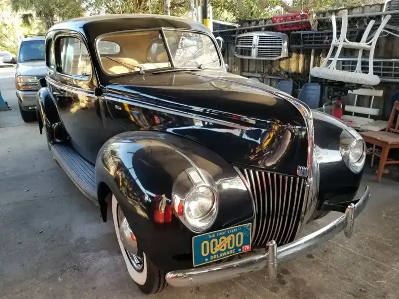
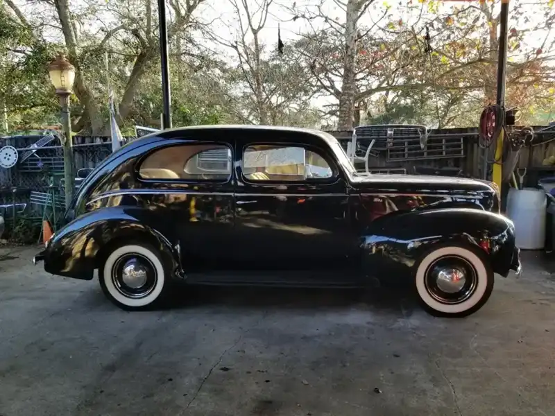
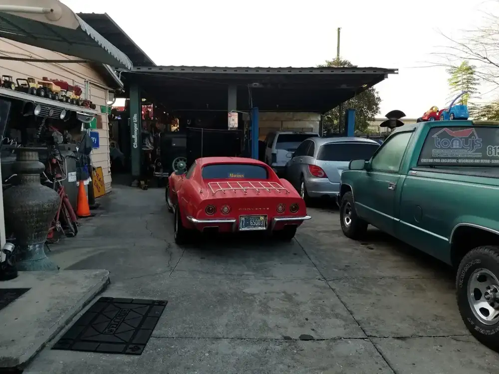

01
Mechanical repairs
Work on the engine and the rest of the car, with the options explained before you decide.
- Honest options
- Updates by phone
- Excellent work

Auto repair · W Mohawk Ave, Tampa
Romero looks at the car, lays out your options and calls with updates. Brakes, mechanical repairs and a tow truck when you need one.
Customers say Romero is honest, explains what the car needs and does excellent work. One has gone to R&R for over ten years, and plenty send everyone they know.
What we work on
Mechanical repairs, brakes, mileage service and towing.
01
Work on the engine and the rest of the car, with the options explained before you decide.

02
One customer came in last minute for brakes and had them done, with calls along the way.

03
R&R picks up your car on its own tow truck. Another customer brought a car in for its 200,000 mile service and got quick, clear recommendations.
At the shop





In their words
4.7
71 Google reviews
I have been going to R&R for 10+ years now after recommendation from one of my neighbors. Romero is honest, presents options when applicable and work is excellent.
Fantastic mechanic. My car was due for 200,000 miles service. Work was great, done quickly with good communications and recommendations. I thought all the trustworthy mechanics retired. Romero is first class.
Came here last minute today to get my brakes done. He was very helpful and took care of my brakes without a problem. I looked around for pricing at other shops and all were extremely high. When I went to him his price was great. I dropped it off and he called with updates . Very thankful for the great communication. Definitely will keep coming here for my mechanical needs.

The shop
R&R Auto Services sits under a metal canopy on West Mohawk Avenue in Tampa, with the sign out front saying Complete Car Care. Customers describe an old school mechanic who keeps it simple and keeps the price fair.
People come back for the same things: Romero is honest, he presents options when there are any, and he calls with updates. One customer who lives an hour away had the shop tow his car in and have it running again within 24 hours.
Find us
6940 W Mohawk Ave, Tampa, FL 33634
Look for the blue R&R Auto Service sign under the canopy.